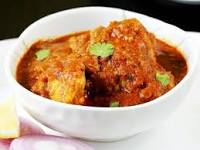

Chicken Curry

Description
Chicken curry is an South-Asian dish that's loved by many,
and easy to make (especially if you're a broke student trying
to get by) you'll just need a some seasoning, salt, chicken
and an apeitite.
There are some people that like to put (coconut) milk in their
curry. That's fine every has the right to have a wrong opinion but for this lession,
we're not going be adding any.
Ingrediants
- 750g of chicken breast
- 1 large onion
- 2 teaspoons of powdered garlic
- 2 teaspoons of powdered ginger
- 1 can of chopped tomatoes
- 1 1/2 tablespoon of garam masala
- 1 1/2 tablespoon of mandras curry power
Instructions
- Heat oil in the pan
- Add chopped onion to pan, stir until golden over medium heat
- Add powered garlic and ginger, stir and cook for two minutes
- Add chopped tomatoes and stir for two minutes
- Add garam masala and curry powder and stir for two minutes
- Add chopped chicken breast stir for two minutes until thier golden
- Add 250ml of water and leave for fourty minutes